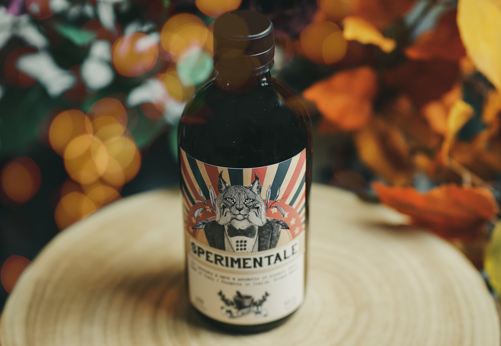

Sperimentale

Un qin davvero inusuale che nasce per i palati più esigenti ec alla ricerca di qualcosa di unico e speciale. La fava di tonka preponderante, conferisce sentori di mandorla vanigliata e noce moscata. Bergamotto e pompelmo costituiscono invece la parte agrumata, che si sposa egregiamente con la base di ginepro. Il risultato è un prodotto equilibrato, raffinato e gradevolmente profumato.
Floreale
Fruttato
Speziato
Balsamico
Erbaceo
Erbe e spezie
Ginepro, bergamotto, pompelmo, fava di tonka, zenzero, pimento, macis, boccioli di rosa, cannella, liquirizia.
Desideri acquistare i nostri prodotti?
Inserisci la tua email per essere contattato.